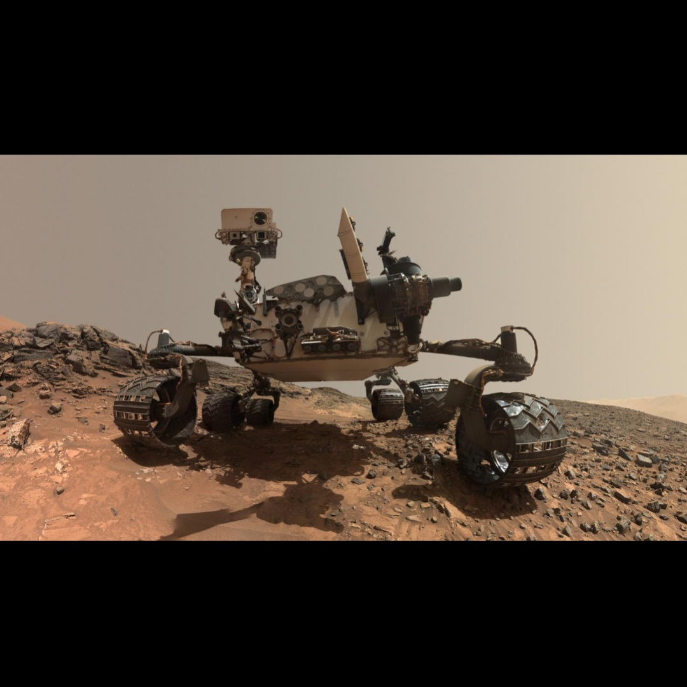

1. Mars is the fourth planet from the Sun.
2. It is called the Red Planet due to iron oxide.
3. Mars has the largest volcano in the Solar System.
4. Its volcano is called Olympus Mons.
5. Mars is a cold desert planet.
6. Evidence shows Mars had water in the past.
7. Mars has two moons: Phobos and Deimos.
8. A day on Mars is similar to Earth (24.6 hours).
9. NASA rover Perseverance is exploring Mars.
10. Mars is a major target for future human missions.